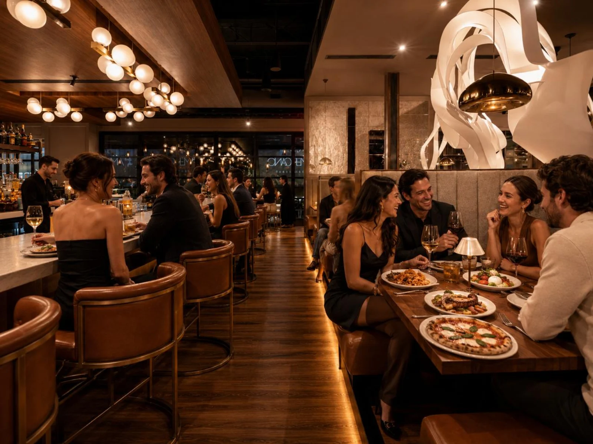
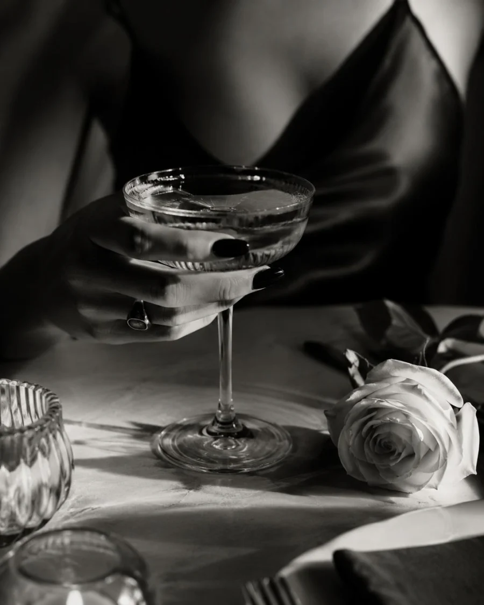
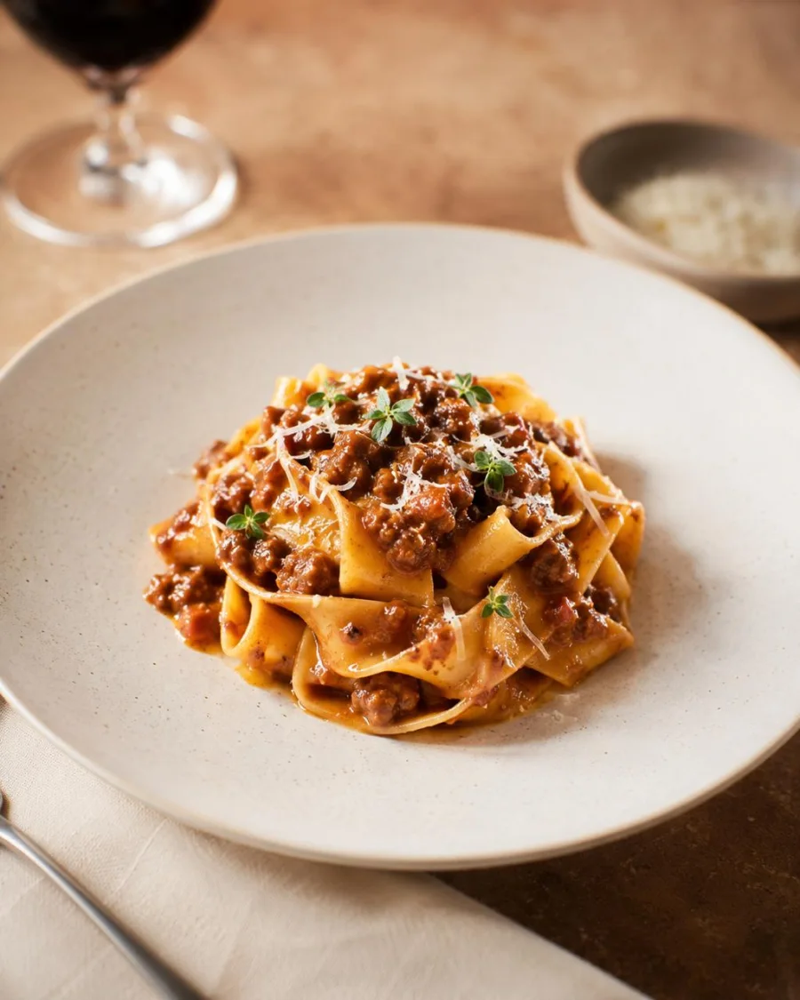
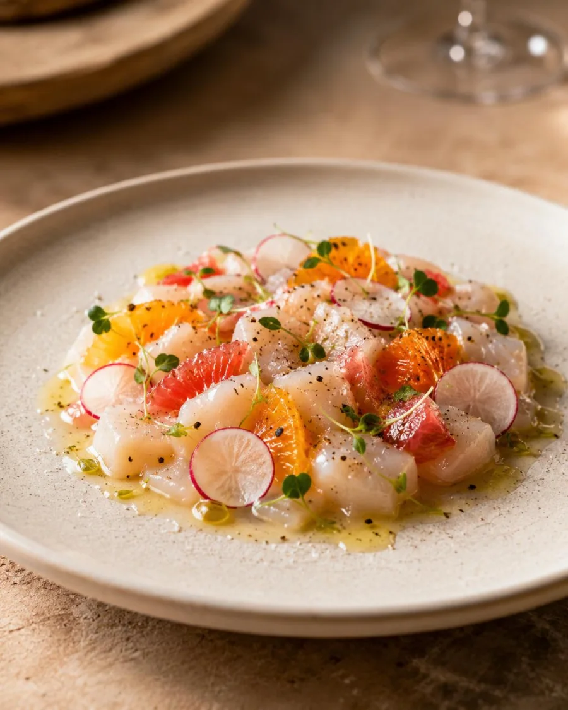
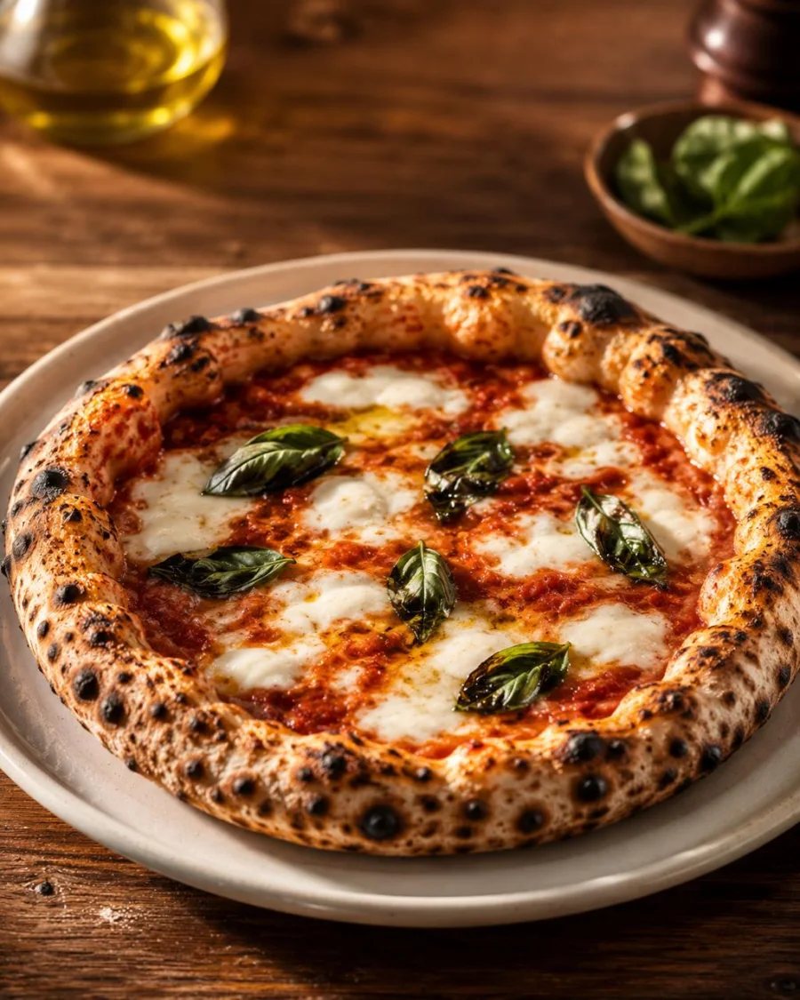
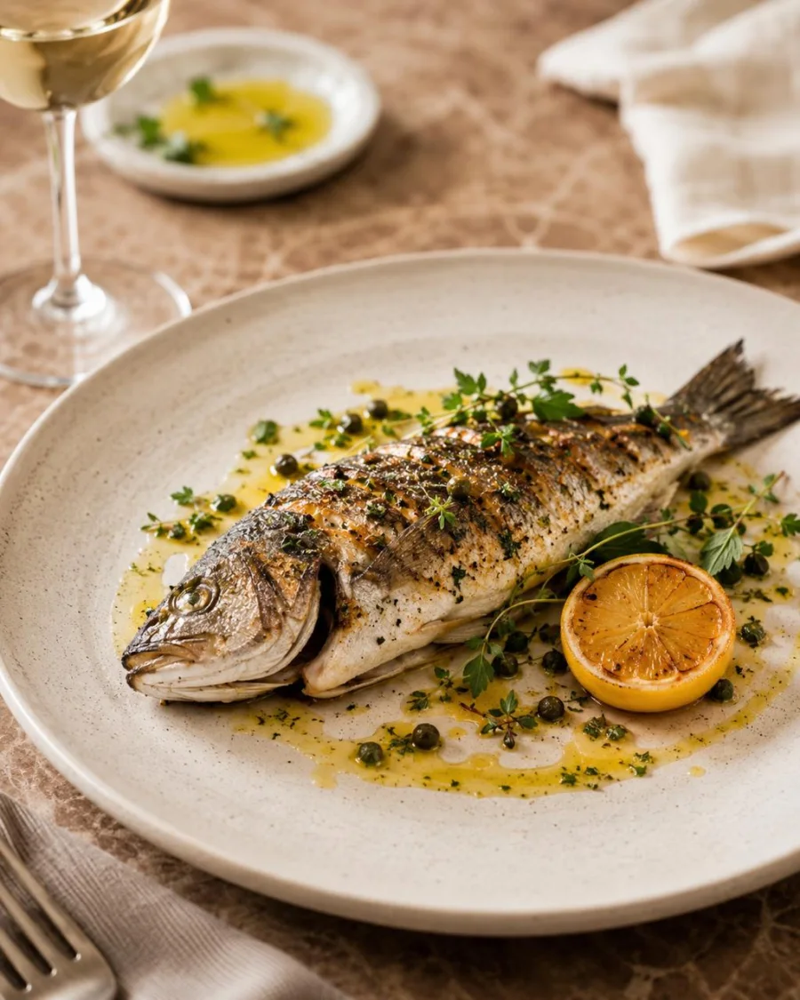

Passatelli, grilled meats, olive oil, herbs, simple vegetables, rustic breads, and the cooking Francesco grew up around.

Food & Origins
Built Around The Neighborhood Table.
Amanti starts from Francesco's Central Italian roots and moves toward something Scottsdale needs now: brighter, easier, more approachable Italian built around pizza, pasta, antipasti, wine, and a neighborhood rhythm.
The Concept
Italian food with memory. Scottsdale warmth without the formality.
Amanti was built around a simple idea: Italian restaurants should be easy to love and easy to repeat. The food pulls from Central Italy and the Adriatic table: bread, olive oil, vegetables, pizza, pasta, roasted meats, seafood, simple salads, wine, and desserts that feel familiar before they feel fancy.
Italian Signals
Every dish should feel rooted, useful, and easy to order.
San Marzano tomato, bufala, basil, sausage, broccolini, mushrooms, and pizzas priced to be part of the regular order.
Parmigiano Reggiano, mortadella, ragu, lasagna, and the generous pasta language that makes the table feel full.
Shrimp, branzino, lemon, herbs, tomatoes, greens, olives, and lighter plates that keep the menu from feeling heavy.

The Ritual
Focaccia. Antipasti. Pizza. Pasta. Wine.
The Amanti rhythm is intentionally simple: order something for the middle, add pizza or pasta, drink something Italian, and leave feeling like the restaurant can become part of your normal week.

How The Menu Works
Built for sharing, pacing, and a table that orders in waves.

Bright FirstFocaccia, burrata, olives, panzanella, tomato, greens, citrus, herbs, and plates that keep the first order easy.

Craveable CenterPizza, pasta, cheese, tomato, sausage, ragu, porcini, lasagna, and plates that build value into the center of the meal.

Fire & FinishBranzino, chicken cacciatora, lamb skewers, shrimp, roasted vegetables, potatoes, and enough larger plates for a celebration.

Why Amanti
Because the best neighborhood Italian restaurants become habits.
The name means lovers, but the promise is broader: people who love pasta, pizza, wine, family dinners, regular bar seats, birthdays, and food that feels personal without becoming precious.
Plan a Night